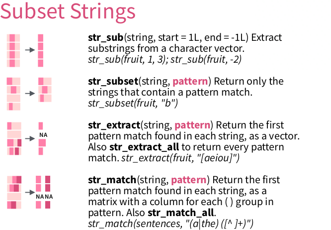

Section 4 Extract a pattern
Here, we will extract a pattern using str_match.
Tip: run ?str_match for its documentation.

From ‘Work with Strings Cheatsheet’, https://rstudio.com/resources/cheatsheets
4.1 Context
Here we will work on a DNA sequence:
## [1] ">KX722530.1|Felinecoronavirus|Feliscatus|Denmark|2015|Envelope"
## [2] "ATGATGTTTCCTAGGGCTTTTACTATCATAGATGACCATGGTATGGTTGTAAGCGTCTTC"
## [3] "TTCTGGCTCCTGTTGATAATTATATTGATATTGTTTTCAATAGCATTGCTAAATGTTATT"
## [4] "AAGTTATGCATGGTTTGTTGCAATCTGGGTAAGACTATTATAGTACTACCTGCACGCCAT"
## [5] "GCATATGATGCCTACAAGACTTTTATGCAAATTAAGGCATATAATCCCGACGAAGCACTT"
## [6] "TTGGTTTGA"
## [7] ">FJ938053.1|Felinecoronavirus|cat|NetherlandsUtrecht|2007|Envelope"
## [8] "ATGATGTTTCCTAGGGCATTTACTATCATAGATGACCATGGTATGGTTGTCAGCGTCTTC"
## [9] "TTTTGGCTCCTGTTGATAATTATATTGATATTGTTTTCAATAGCATTGCTAAATGTTATT"
## [10] "AAGTTATGCATGGTATGTTGCAATTTGGGTAAGACTATTATAGTATTACCTGCACGCCAT"The data encoded in this text:
>[DNA sequence number]|[virus name]|[host species name]|[country of host]|[year]|[protein name]"
[DNA sequence]4.2 str_match
str_match returns:
- a matrix
- a row per line of text, containing the match or an NA
- a column per submatch (see later)
For example, using a ‘everything’ pattern, we get:
matches <- stringr::str_match(text, ".*")
expect_equal(class(matches), "matrix")
expect_equal(nrow(matches), length(text))
expect_equal(ncol(matches), 1)
head(matches)## [,1]
## [1,] ">KX722530.1|Felinecoronavirus|Feliscatus|Denmark|2015|Envelope"
## [2,] "ATGATGTTTCCTAGGGCTTTTACTATCATAGATGACCATGGTATGGTTGTAAGCGTCTTC"
## [3,] "TTCTGGCTCCTGTTGATAATTATATTGATATTGTTTTCAATAGCATTGCTAAATGTTATT"
## [4,] "AAGTTATGCATGGTTTGTTGCAATCTGGGTAAGACTATTATAGTACTACCTGCACGCCAT"
## [5,] "GCATATGATGCCTACAAGACTTTTATGCAAATTAAGGCATATAATCCCGACGAAGCACTT"
## [6,] "TTGGTTTGA"Using a pattern that is specific for the DNA sequence descriptors, we get NAs:
matches <- stringr::str_match(text, ">.*")
expect_equal(class(matches), "matrix")
expect_equal(nrow(matches), length(text))
expect_equal(ncol(matches), 1)
head(matches, n = 8)## [,1]
## [1,] ">KX722530.1|Felinecoronavirus|Feliscatus|Denmark|2015|Envelope"
## [2,] NA
## [3,] NA
## [4,] NA
## [5,] NA
## [6,] NA
## [7,] ">FJ938053.1|Felinecoronavirus|cat|NetherlandsUtrecht|2007|Envelope"
## [8,] NAUsing round brackets, the matrix gives one extra column per sub-match.
Here, we select for all info after the >:
matches <- stringr::str_match(text, ">(.*)")
expect_equal(class(matches), "matrix")
expect_equal(nrow(matches), length(text))
expect_equal(ncol(matches), 2)
head(matches, n = 8)## [,1]
## [1,] ">KX722530.1|Felinecoronavirus|Feliscatus|Denmark|2015|Envelope"
## [2,] NA
## [3,] NA
## [4,] NA
## [5,] NA
## [6,] NA
## [7,] ">FJ938053.1|Felinecoronavirus|cat|NetherlandsUtrecht|2007|Envelope"
## [8,] NA
## [,2]
## [1,] "KX722530.1|Felinecoronavirus|Feliscatus|Denmark|2015|Envelope"
## [2,] NA
## [3,] NA
## [4,] NA
## [5,] NA
## [6,] NA
## [7,] "FJ938053.1|Felinecoronavirus|cat|NetherlandsUtrecht|2007|Envelope"
## [8,] NASelect the second column:
matches <- matches[, 2]
expect_equal(class(matches), "character")
expect_equal(length(matches), 180)
head(matches, n = 8)## [1] "KX722530.1|Felinecoronavirus|Feliscatus|Denmark|2015|Envelope"
## [2] NA
## [3] NA
## [4] NA
## [5] NA
## [6] NA
## [7] "FJ938053.1|Felinecoronavirus|cat|NetherlandsUtrecht|2007|Envelope"
## [8] NAGet rid of the NAs using purrr:
matches <- purrr::discard(matches, is.na)
expect_equal(class(matches), "character")
expect_equal(length(matches), 30)
head(matches)## [1] "KX722530.1|Felinecoronavirus|Feliscatus|Denmark|2015|Envelope"
## [2] "FJ938053.1|Felinecoronavirus|cat|NetherlandsUtrecht|2007|Envelope"
## [3] "GU553362.1|Felinecoronavirus|feline|Netherlands|2007|Envelope"
## [4] "KP143512.1|Felinecoronavirus|Feliscatus|UnitedKingdom|2013|Envelope"
## [5] "KU215424.1|Felinecoronavirus|Feliscatus|Belgium|2013|Envelope"
## [6] "HQ392470.1|Felinecoronavirus|feline|NetherlandsUtrecht|2007|Envelope"All of this in one go:
matches <- purrr::discard(
stringr::str_match(text, ">(.*)")[, 2],
is.na
)
expect_equal(length(matches), 30)
head(matches)## [1] "KX722530.1|Felinecoronavirus|Feliscatus|Denmark|2015|Envelope"
## [2] "FJ938053.1|Felinecoronavirus|cat|NetherlandsUtrecht|2007|Envelope"
## [3] "GU553362.1|Felinecoronavirus|feline|Netherlands|2007|Envelope"
## [4] "KP143512.1|Felinecoronavirus|Feliscatus|UnitedKingdom|2013|Envelope"
## [5] "KU215424.1|Felinecoronavirus|Feliscatus|Belgium|2013|Envelope"
## [6] "HQ392470.1|Felinecoronavirus|feline|NetherlandsUtrecht|2007|Envelope"4.3 Example exercise: extract_dna_sequence_numbers
Extract the DNA sequence numbers.
Hint:
- it is the text between
>and|Felinecoronavirus. - Use
\\|in your regex to indicate you want the pipe character ( asa|bis the regex for ‘a or b’)
These tests must pass:
expect_equal(30, length(extract_dna_sequence_numbers(text)))
expect_equal("KX722530.1", extract_dna_sequence_numbers(text)[1])
expect_equal("KP143511.1", extract_dna_sequence_numbers(text)[30])4.4 Answer: extract_dna_sequence_numbers
extract_dna_sequence_numbers <- function(text) {
purrr::discard(
stringr::str_match(text, ">(.*)\\|Felinecoronavirus.*")[, 2],
is.na
)
}expect_equal(30, length(extract_dna_sequence_numbers(text)))
expect_equal("KX722530.1", extract_dna_sequence_numbers(text)[1])
expect_equal("KP143511.1", extract_dna_sequence_numbers(text)[30])The regex ">(.*)\\|.*" would not work, because the asterisk is greedy.
4.5 Example exercise: extract_year
Extract the year the DNA sequence has been obtained. Convert the text to a number.
Hint: the year is always 4 consecutive numbers, from 1993 to (and including) 2016.
These tests must pass:
expect_equal(30, length(extract_year(text)))
expect_equal(2015, extract_year(text)[1])
expect_equal(2013, extract_year(text)[30])4.6 Answer: extract_year
extract_year <- function(text) {
as.numeric(
purrr::discard(
stringr::str_match(text, ".*([:digit:]{4}).*")[, 2],
is.na
)
)
}expect_equal(30, length(extract_year(text)))
expect_equal(2015, extract_year(text)[1])
expect_equal(2013, extract_year(text)[30])Here, the simple regex worked, because the asterisk is greedy.